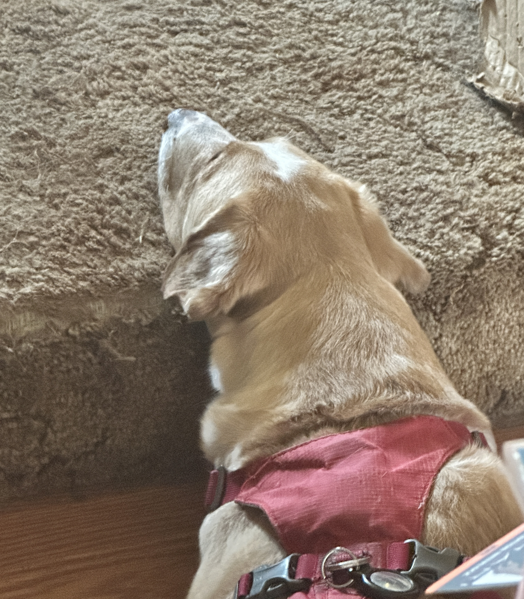

Lexi Nunnally
I'm so excited to create different types of websites. There are many kinds of sites I'd like to make; however these are my current top 3.
I've always loved creating entertaining pieces of work. The very first blog I made was a pov of my pet guinea pigs. It told the stories of their real and fake adventures. This didn't last very long but it was fun while I did it. I want to keep a playful and down to earth tone with any blogs I create.
The website I've created the most throughout school is portfolios. In most of my art classes in high school and early college classes I've had to create a portfolio for the work done in the class. It would be nice to have one site for all the work I've created, instead of a ton of different websites for each of my classes. Plus I can show my personal projects as well. While I still want to have a playful tone, I would want this site to be a bit more professional, while still having fun.
The final type of site I'd like to do is one for a small business. This is the one type I haven't explored yet. Throughout my graphic design classes I got to make multiple branding packages and/or app designs for them; however, I really want to be able to code these projects into reality. This type of site would be strictly professional, and depending on the brand, maybe make it more entertaining.
Anyways here is a cut photo of one of my dogs, get ready to see a lot of them this semester.
